Arşiv Galerisi
Enstitünün görsel arşivinde yer alan saha kayıtları, tarihsel belgeler ve tanık portreleri burada bir araya getirilmiştir. Görselleri tıklayarak büyütebilir, klavye oklarıyla gezinebilirsiniz.
Saha ve Arşiv Kayıtları
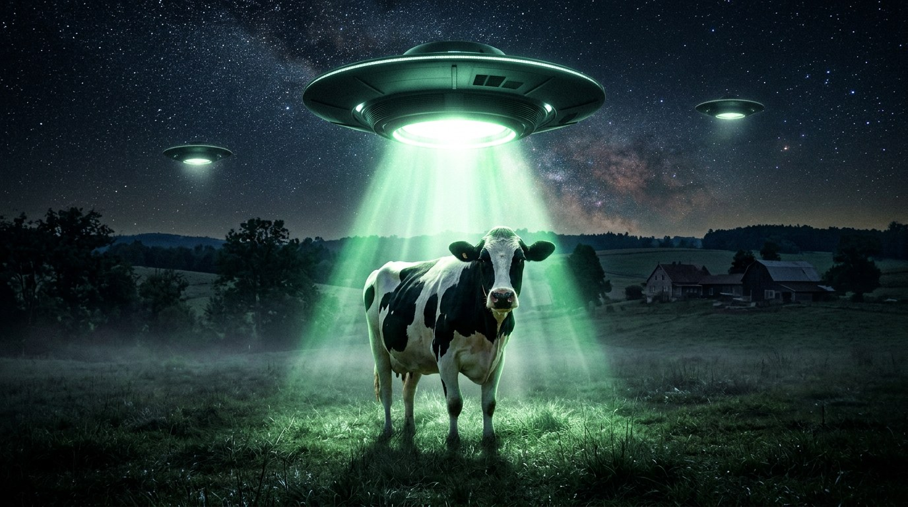

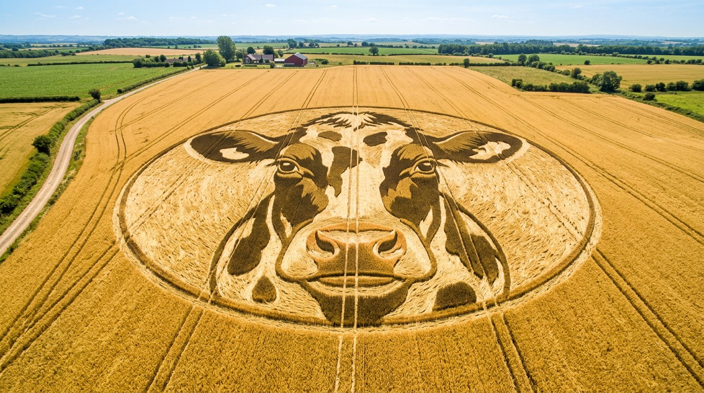
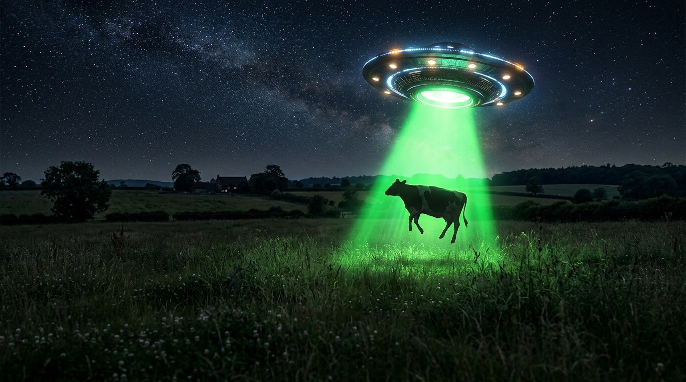
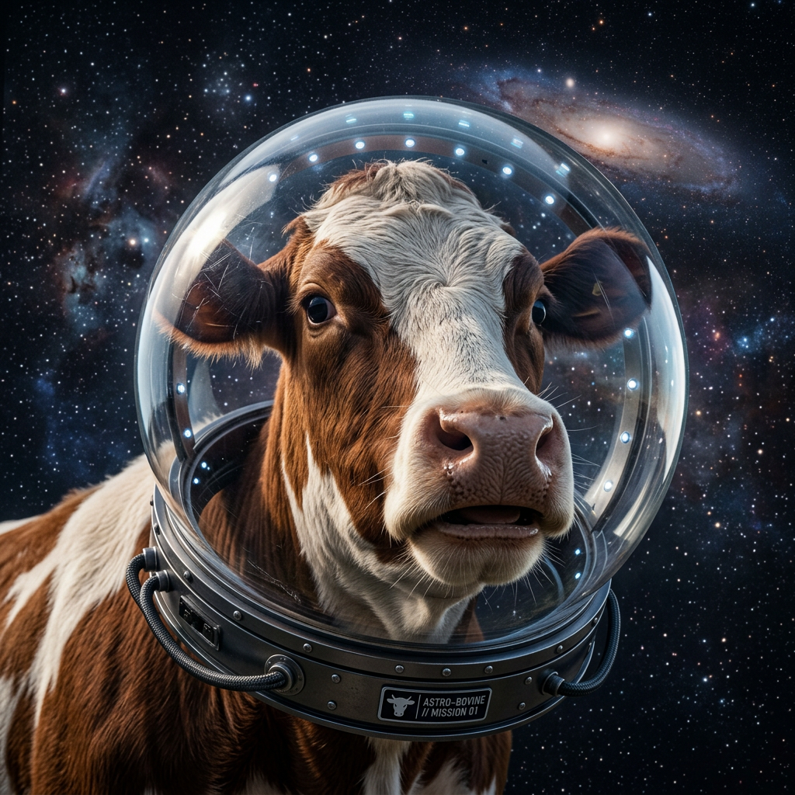
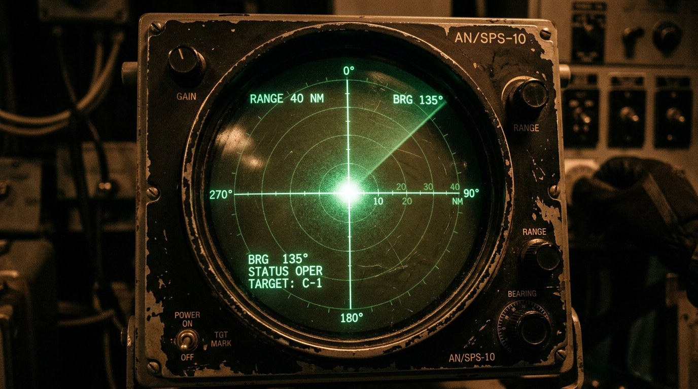
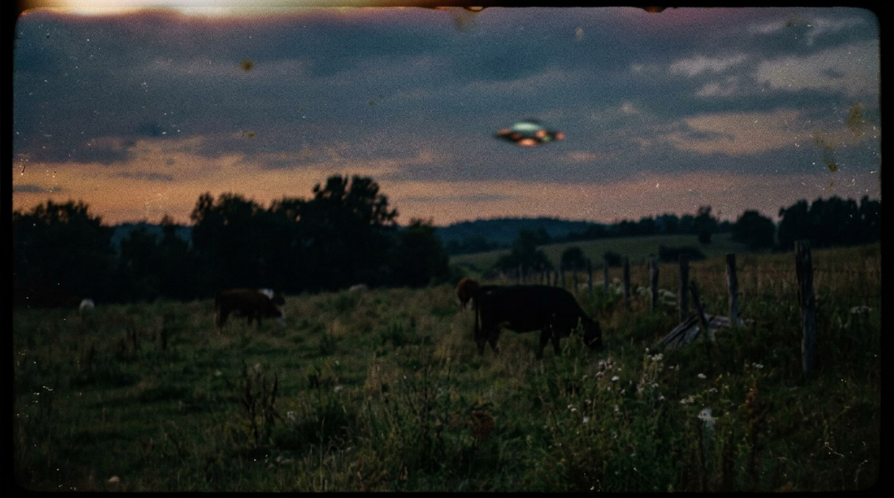
Tanık Portreleri
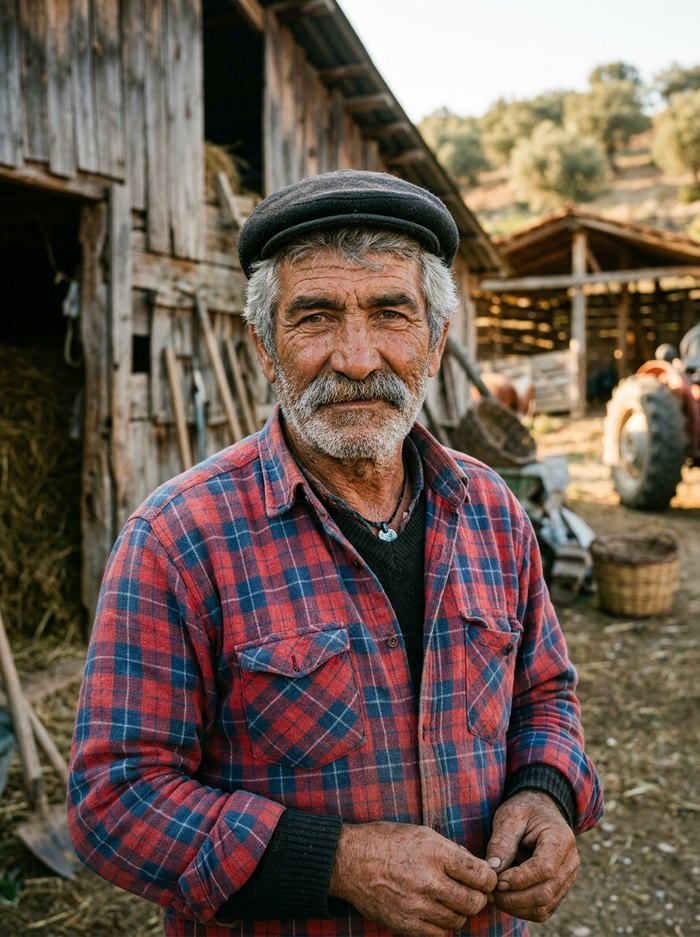
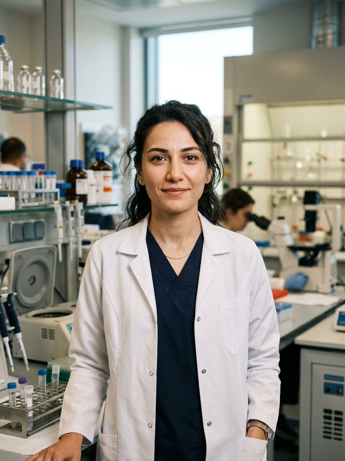
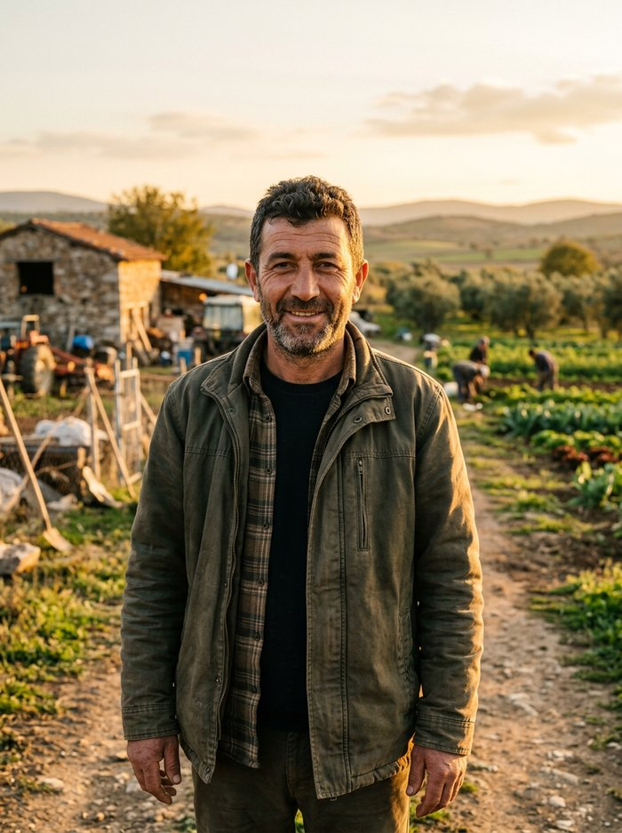
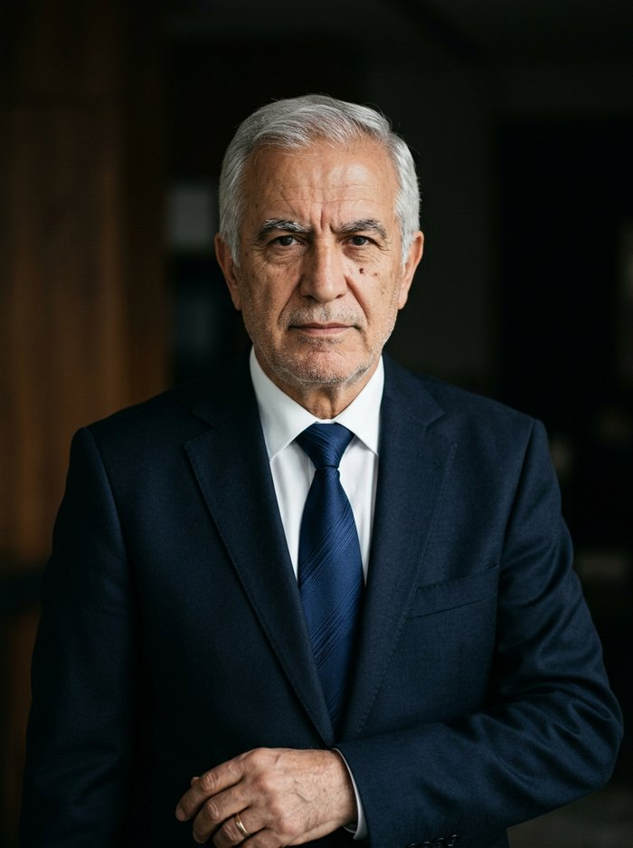
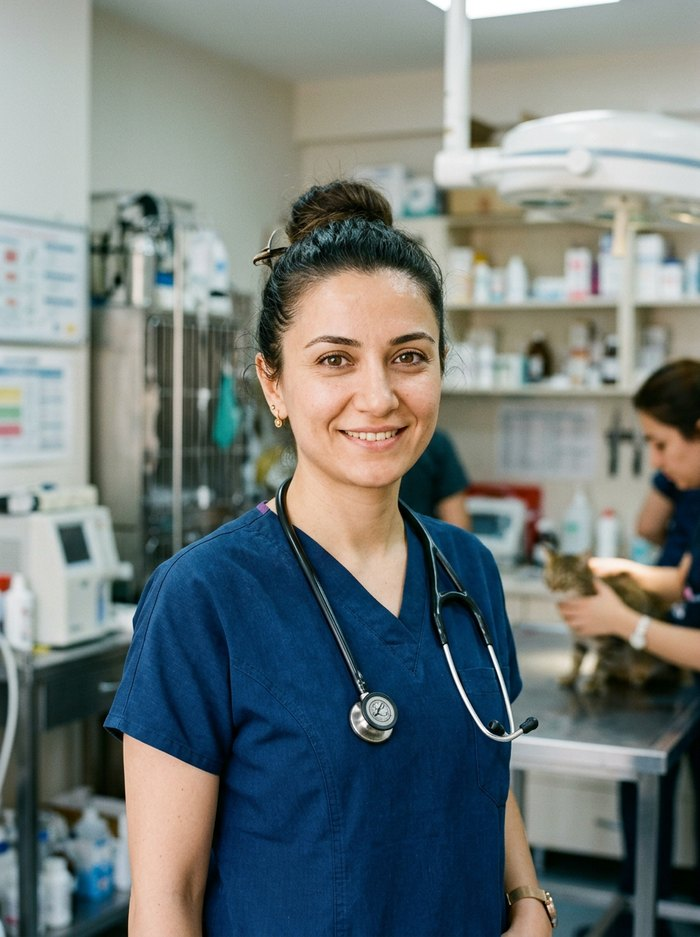
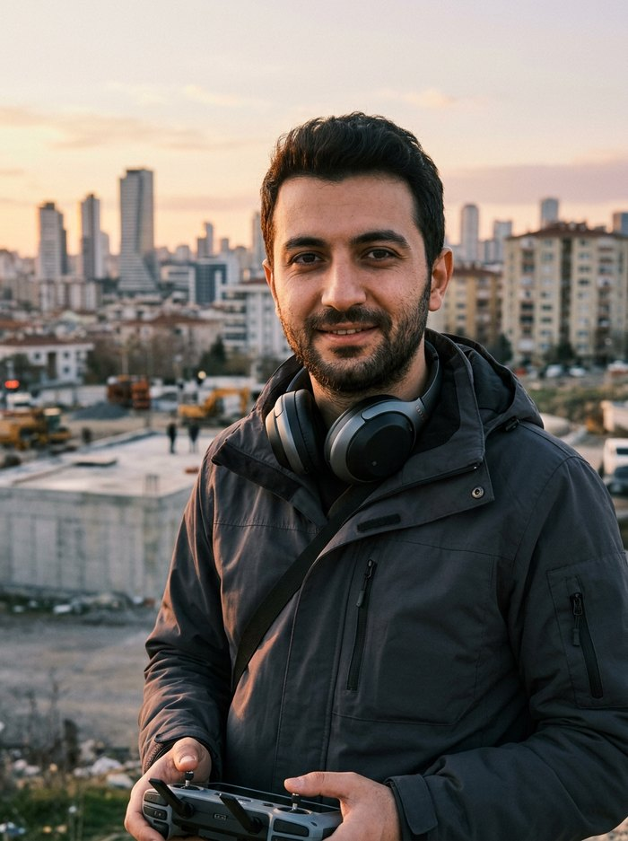